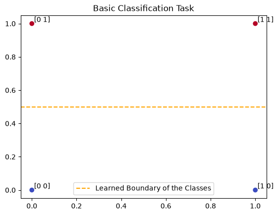
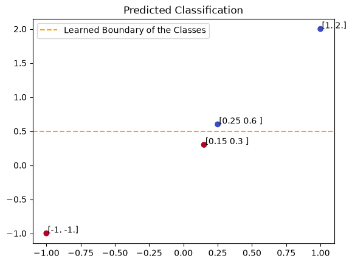
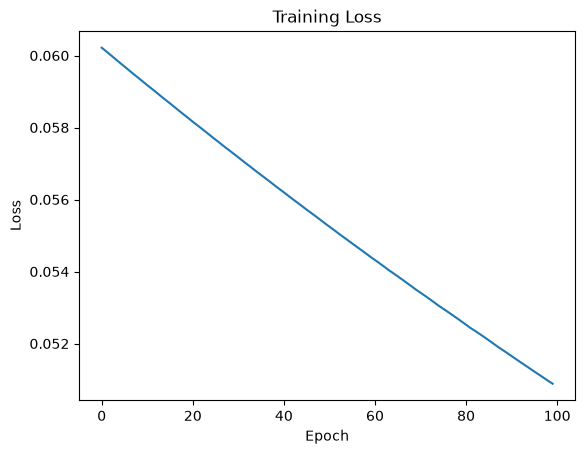

Neural Network Basics#
A Neural Network is a machine learning model inspired by the structure of the human brain. Put simply: neural networks minimize error just like scipy.optimize.minimize. As this occurs, we say learns patterns from data that can then be used for a number of tasks. For example, data classification, data generation, and more. For this class, we will focus on classification of data.
Mathematical Background#
First, we’ll cover the background of the networks we will deal with. Firstly, we will take a dataset and vectorize it. Then, we send it to the neurons.
Neurons#
Designed to mimic physical neurons, this most basic neural network object does the following:
Receives inputs in the form of vectors
Weights the input
Applies some function
Outputs the new re-weighted values to another set of neurons
We collect sets of neurons into layers. The first layer is the input layer, the last is the output layer, and every layer in between is a hidden layer.
Forward Passes#
In order for the neural network to “learn”, it first needs to predict. Testing whether these outputs are correct will come later. We will input some data set and the following will occur:
Vector inputs enter the network
Each layer reweights inputs then applies “activation functions” to generate outputs for the next layer
At the output layer, predictions of classes are produced
For example, if I input a dataset like iris that has information on certain flower properties, then we output the probability that a certain flower is a specific species.
Without activation functions, neural networks behave like linear models. We want more complicated models. Common activation functions include:
Sigmoid \(\sigma(x) = 1 / (1 + e^{-x})\)
ReLU \( f(x) = \max\{0, x\}\)
Hyperbolic tangent \(\tanh(x)\)
Backward Passes#
Now that we have a set of predictions we want to know how right or wrong we were. First, we must define what right and wrong are in this context. This is where loss functions come in. The loss function measures prediction error (how well the model is performing). Common loss functions:
Mean Squared Error (Regression) \(MSE = \frac{1}{n}\sum_{i=1}^{n}(y_i - \hat{y}_i)^2\)
Binary Crossentropy \( L = -\frac{1}{n}\sum_{i=1}^{n}\left[y_i\log(\hat{y}_i)+(1-y_i)\log(1-\hat{y}_i)\right] \)
Categorical Crossentropy \( L =-\sum_{i=1}^{C}y_i\log(\hat{y}_i)\)
Once we have this error, we attribute certain amounts of error to individual neurons. Weights are updated by performing gradient descent:
new_weight = old_weight - learning_rate x gradient
where learning_rate is a parameter controlling how much effect the gradient has on reweighting.
The process works as follows:
Prediction -> Compute Error -> Compute Gradients -> Update Weights
# preliminaries
import numpy as np
import tensorflow as tf
from tensorflow import keras
from sklearn.model_selection import train_test_split
from keras.models import Sequential
from keras.layers import Dense
import matplotlib.pyplot as plt
Full Working Example#
Let’s start with some random data \(X\) with its true labels \(Y\).
X = np.array([
[0,0],
[0,1],
[1,0],
[1,1]
])
Y = np.array([0,1,0,1])
Now we can create a neural network:
model = Sequential([
Dense(4, activation="relu", input_shape=(2,)),
Dense(1, activation="sigmoid")
])
We will define how the backpropagation will occur:
Optimizer: Adam
Loss: Binary Crossentropy
And what should be tracked:
Metric: Accuracy
model.compile(
optimizer="adam",
loss="binary_crossentropy",
metrics=["accuracy"]
)
Training consists of:
Forward propagation
Loss calculation
Backpropagation
Weight updates
model.fit(
X,
Y,
epochs=1000,
verbose=False
)
<keras.src.callbacks.history.History at 0x1cc8f38d310>
We can see how well our neural network performs on the classification:
loss, accuracy = model.evaluate(X, Y)
print("Accuracy:", accuracy)
1/1 ━━━━━━━━━━━━━━━━━━━━ 0s 47ms/step - accuracy: 1.0000 - loss: 0.0820
Accuracy: 1.0
What the neural network is learning is a boundary. What’s going on visually is like this:
plt.scatter(X[:,0], X[:,1], # data
c=Y, # true labels for data
cmap='coolwarm')
for i in range(len(X)):
plt.annotate(X[i], (X[i, 0]+.01, X[i,1]+.01))
plt.axhline(.5, c='orange', linestyle='--',label='Learned Boundary of the Classes')
plt.legend()
plt.title('Basic Classification Task')
Text(0.5, 1.0, 'Basic Classification Task')

And after training, we can make predictions for other vectors!
newdata = np.array([[1,2],
[-1,-1],
[.25, .6],
[.15, .3]])
prediction = model.predict(newdata)
classes = [int(i[0]) for i in prediction<.5]
print(classes)
1/1 ━━━━━━━━━━━━━━━━━━━━ 0s 87ms/step
[0, 1, 0, 1]
plt.scatter(newdata[:,0], newdata[:,1], # data
c=classes, # true labels for data
cmap='coolwarm')
for i in range(len(newdata)):
plt.annotate(newdata[i], (newdata[i, 0]+.01, newdata[i,1]+.01))
plt.axhline(.5, c='orange', linestyle='--',label='Learned Boundary of the Classes')
plt.legend()
plt.title('Predicted Classification')
Text(0.5, 1.0, 'Predicted Classification')

network = model.fit(
X,
Y,
epochs=100,
verbose=False
)
plt.plot(network.history["loss"])
plt.title("Training Loss")
plt.xlabel("Epoch")
plt.ylabel("Loss")
plt.show()

Advantages of Neural Networks#
Can learn complex relationships
Typically high accuracy
Works well with large datasets
Can solve image, text, and audio problems
Limitations#
Requires significant training data
Computationally expensive
Can overfit
Often difficult to interpret
Ethical Considerations#
This is probabilistic in nature. Inference should keep this in mind.
The human supervision should ensure these networks operate appropriately.
Lab Problems#
Create a neural network with:
2 input features
8 hidden neurons
ReLU activation
1 sigmoid output neuron
Create your own dataset and train the model for:
50 epochs
100 epochs
300 epochs
Compare the results.
Replace the optimizer:
optimizer="sgd"
Compare it with:
optimizer="adam"
Create a neural network to classify flowers in the Iris dataset by species:
Input layer
One hidden layer
Three output neurons
Softmax activation